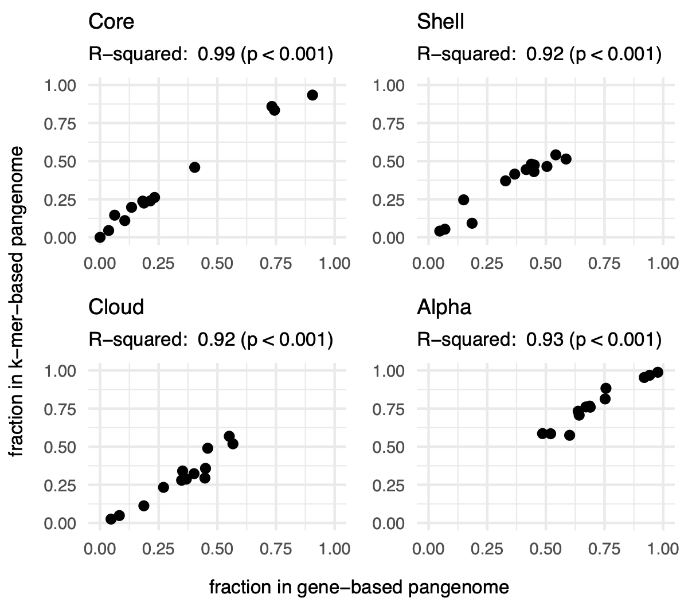
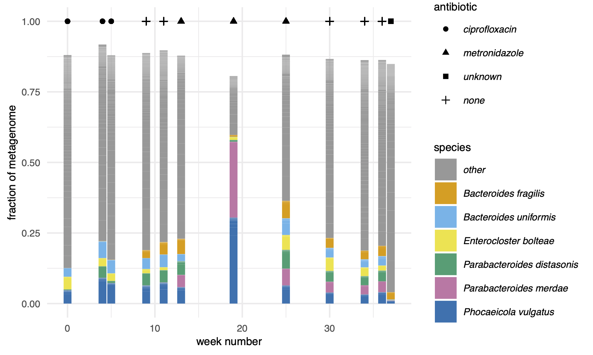
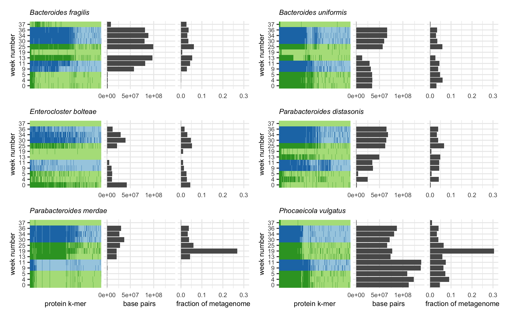
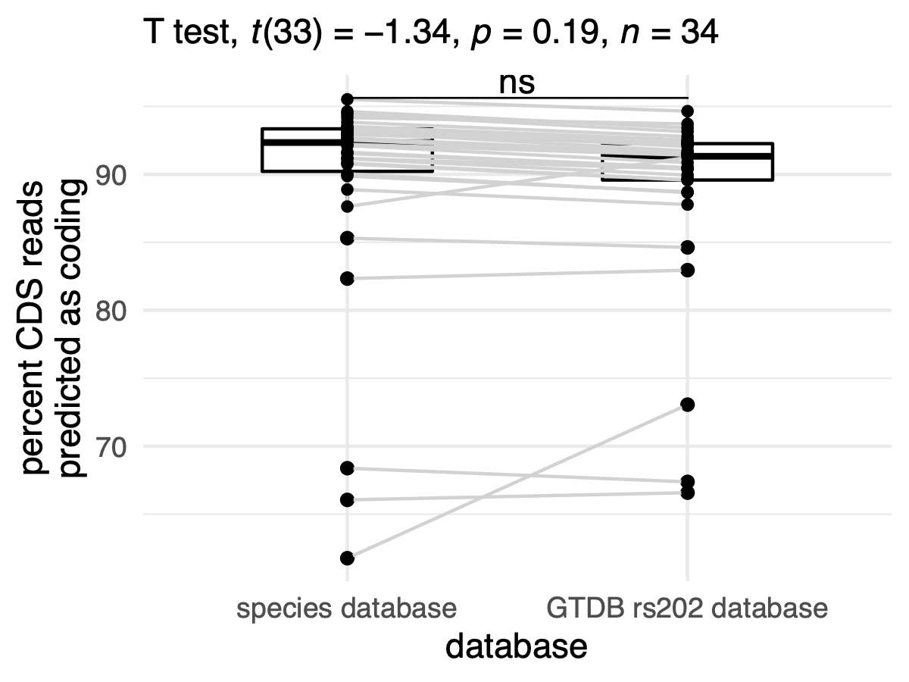

Taylor E. Reiter 0000-0002-7388-421X
· taylorreiter
· ReiterTaylor
Department of Population Health and Reproduction, University of California, Davis
· Funded by Grant XXXXXXXX
N. Tessa Pierce-Ward 0000-0002-2942-5331
· bluegenes
· saltyscientist
Department of Population Health and Reproduction, University of California, Davis
· Funded by NSF 1711984
Luiz Irber 0000-0003-4371-9659
· luizirber
· luizirber
Graduate Group in Computer Science, UC Davis; Department of Population Health and Reproduction, University of California, Davis
C. Titus Brown 0000-0001-6001-2677
· ctb
Department of Population Health and Reproduction, University of California, Davis
Abstract
Introduction
Short read metagenomic sequencing has expanded our knowledge of microbial communities and diversity [1,2,3].
In particular, metagenome assembly and genome binning or annotation have produced catalogs of metagenome-assembled genomes and genes, revealing new species and functional potentially previously unobserved in cultured organisms [1,2,4].
Along with advances in metagenome sequencing and analysis, the concept of metapangenomics has arisen as a framework for understanding how sets of metagenome-derived genes that are attributable to a group of organisms correlate with parameters in the environments in which they are sampled from [5,6,7].
Metapangenomic methods borrow heavily from pangenome analysis.
Pangenomes comprise all genomic elements – usually open reading frames or genes – found within a group of organisms and reflect the metabolic and ecological plasticity of that group [8,9].
The pangenome is divided into core and accessory genes, where core genes are shared by almost all members in the group and accessory genes are not.
Core genes often encode primary metabolism or other functions necessary for a group to live in a given environment [10], while accessory genes encode functions that facilitate adaptation to changing environments [9].
The size of the pangenome reflects the diversity of the organisms in a pangenome (population size, number of organisms sampled) as well as the ability of those organisms to adapt to different niches [8].
Open pangenomes are those which increase indefinitely in size when adding new genomes, while closed pangenomes do not.
While pangenomes are traditionally inferred from isolate genomes, metapangenomics extends the ecological framework of pangenomics to metagenomes.
Metapangenomics gives insight into the genes that support specific environmental adaptations by applying pangenome methods to metagenome assembled genomes (MAGs) [6], or by mapping metagenomes against isolate-inferred pangenomes [5].
Both methods give valuable insight into the presence and distribution of functional content in natural microbial communities, but either may introduce biases associated with unknown sequencing content [11].
MAGs are often incomplete or unrecoverable due to low sequencing coverage or large amounts of variation (SNPs, indels, rearrangements, horizontal gene transfer, sequencing error, etc.), both of which cause short read assemblers to produce unbinnable short contiguous sequences.
Unbinned sequences are disproportionately comprised of genomic islands and plasmids [12], hot spots for evolution that support microbial adaptation to changing environments [13].
In contrast, read mapping against isolate-inferred pangenomes may miss functional content present in the metagenome but missing from references, especially for species under represented or unrecorded in reference databases.
These issues are not exclusive to metapangenome inference, and many recently developed analysis strategies overcome some of these biases.
These techniques largely rely on k-mers, words of length k in DNA or protein sequences.
Metagenome k-mer profiles contain all sequences in a metagenome, including those which may not assemble or bin, or which aren’t in reference databases.
Long k-mers are also taxonomy-specific, where increasing k-mer length leads to sub-species discriminatory power [14] (CITE: TESSA).
These properties have popularized the use of k-mers for metagenome analysis, primarily through lightweight sketching and compact de Bruijn assembly graphs (cDBGs).
Lightweight sketching facilitates fast and accurate sequence comparisons between potentially large data sets through random but consistent sub-sampling [15,16].
cDBGs maintain connectivity between k-mers and organize them into species-specific neighborhoods [17,18].
To more fully represent the functional potential in metapangenomes, we present an analysis approach that relies on amino acid k-mers and assembly graph queries to estimate microbial (meta)pangenomes.
This approach for metapangenome estimation is minimally reliant on reference databases and is assembly-free.
Results
In an effort to reconstruct metapangenomes without loss of information from assembly and binning [12,17,18,19,20,21], we demonstrate a pipeline that relies on k-mers and assembly graphs for metapangenome estimation (Figure 1).
We first show that amino acid k-mers accurately estimate microbial pangenomes by comparing amino acid profiles of proteomes (translated coding domain sequences) against the proteomes themselves (Figure 1 A).
To derive amino acid k-mers directly from shotgun metagenome reads, we next demonstrate the accuracy of a tool called orpheum for open reading frame prediction from short sequencing reads (Figure 1 B).
We use assembly graph genome queries to retrieve species-specific reads from the metagenome, predict open reading frames from those reads using orpheum, and build a metapangenome using protein k-mers (Figure 1 C).
We then apply this method to species present over time in a time series metagenomes from a human gut microbiome.
Figure 1:Overview of the pipeline used to build metapangenomes.
Approaches that were developed or tested in this manuscript are outlined in grey.
A) We tested whether degenerate k-mer alphabets could accurately represent bacterial and archaeal pangenomes. Using genomes annotated with prokka, we compared pangenomes built with roary, a field-standard pipeline, against pangenomes built with degenerate k-mer alphabet sketches.
B) We tested whether open reading frames could be predicted directly from short sequencing reads using the tool orpheum. This panel is modified from [22].
C) We combined this approaches with metagenome assembly graph genome queries to estimate metapangenomes directly from metagenomes without assembly or binning.
The blue and orange lines correspond to steps tested in panels A and B.
Reduced alphabet k-mers accurately estimate characteristics of microbial pangenomes
Pangenomes from isolates are typically built by assembling each isolate genome and predicting genes (open reading frames), clustering gene sequences from all genomes into a non-redundant set, and estimating the presence/absence or abundance of each gene in each genome.
To determine whether bacterial and archaeal pangenomes could be constructed from reduced alphabet k-mers, we compared pangenomes estimated from genes against those estimated from k-mers (amino acid, dayhoff, and hydrophobic-polar).
We compared pangenomes from 23 species belonging to 23 phyla in the GTDB taxonomy [23], with pangenome size ranging from 20-972 genomes (mean = 203 genomes, median = 44 genomes).
For each pangenome, we compared the total number of genes to the total number of k-mers, and the number of unique genes to the number of distinct k-mers within each genome.
We also tested the similarity of presence/absence profiles between pangenomes constructed with different methods using the Mantel test.
For these three metrics, performance varied minimally across encodings and k-mer sizes (Figure 2).
This is likely because the genomes of the same species are closely related, so any reduced alphabet k-mer is sufficient to overcome minor genomic variations such as those introduced by codon degeneracy or evolutionary drift (CITE?).
Given that neither encoding nor k-mer size impacted these performance metrics, we selected protein k-mers with k = 10 to complete the rest of our analysis.
Protein k-mers of length 10 have recently been shown to perform well for comparisons across variable taxonomic distances (CITE: TESSA).
Should I compare this against nucleotide k-mers at all? Bc I think that’s the underlying assumption here, nucleotides don’t work for this stuff. Tessa stuff sort of already shows this.
Figure 2:K-mer size and encoding do not impact pangenome estimation with k-mers. Violin plots representing the distribution of R2 values for linear models (Total, Unique) or statistic values for mantel tests (Mantel) calculated for each pangenome. Total corresponds to correlations between the total number of distinct genes and k-mers in a genome. Unique corresponds to correlations between the number of unique genes and k-mers in genome. Mantel corresponds to mantel tests between the gene and k-mer presence-absence matrices.
While performance across metrics was similar for encodings and k-mer sizes, it varied dramatically for different pangenomes: both k-mers and genes are highly correlated for some pangenomes and are not correlated for others (Figure 2).
We investigated pangenomes more closely to determine the source of the poor correlations and found that they were caused by the presence of many frameshifted proteins, one of many potential criteria for exclusion of GenBank genomes from RefSeq.
For example, Leptospira interrogans had an R2 of 0.12 between the total number of genes and k-mers in genomes in the pangenome, but 21 of 317 genomes contained frameshifted proteins.
Removing these genomes increased the R2 to 0.87 (Figure 3 A).
This trend was consistent across pangenomes, where pangenomes with one or more frameshift-excluded genome had significantly lower R2 values between total number of genes and k-mers per genome than pangenomes without (Welch Two Sample t-test, estimate = -0.36, p = 0.003) (Figure 3 B).
Other RefSeq exclusion criteria did not impact the correlation between the total genes and k-mers per genome for a given pangenome.
Figure 3:Genomes that are excluded from RefSeq for having many frameshifted proteins reduce similarity between gene- and k-mer-based pangenomes.A) Scatter plot of the total number of genes and k-mers per genome for the species Leptospira interrogans, where each point represents a single genome in the pangenome.
Removing genomes flagged with RefSeq exclusion criteria “many frameshifted proteins” improves the correlation between these variables.
B) Box plot of R2 values between the total number of genes and k-mers per genome.
Pangenomes that contain genomes with the RefSeq exclusion criteria of “many frameshifted proteins” have significantly lower R2 values
We next investigated whether other pangenome metrics were well correlated between our k-mer-based and the gene-based method roary using pangenomes that did not contain genomes excluded from RefSeq for having many frameshifted proteins (see Methods for details).
For these 13 pangenomes, the percent of k-mers or genes predicted to be part of the core, shell, or cloud pangenome was strongly correlated (Figure 4).
We also compared whether pangenomes would be designated as open or closed by calculating the alpha value for the Heaps law model [24].
Alpha values were strongly correlated between gene- and k-mer based pangenomes (Figure 4).
Figure 4:Pangenome metrics strongly correlate between gene- and k-mer-based pangenomes. Pangenome categories core, shell, and cloud refer to genes or k-mers shared between the majority (>95%), some, or singleton genomes in the pangenome. Alpha is a value from Heaps law used to estimate whether a pangenome is open or closed.
Taken together, these results show that reduced alphabet k-mers can accurately estimate key characteristics of pangenomes from bacterial and archaeal genomes.
K-mer methods accurately predicts open reading frames in short sequencing reads
We next sought to determine whether open reading frames could be accurately predicted directly from short sequencing reads, as this would enable k-mer-based pangenome analysis without assembly.
Without accurate open reading frame prediction, reads would need to be translated into all six translation frames prior to k-mer decomposition.
This would inflate the number of k-mers and decrease similarity between genomes.
We evaluated whether orpheum, a tool recently developed to predict open reading frames in Eukaryotic short reads [22], could also perform this task in bacterial and archaeal sequences.
Orpheum predicts open reading frames by comparing reduced alphabet k-mers in six frame translations of short sequencing reads against those in a database (Jaccard containment) and assigns an open reading frame as coding if containment exceeds a user-defined threshold [22].
To evaluate orpheum, we constructed a database containing all k-mers in coding domain sequences from genomes in GTDB rs202.
Using representative genomes from the 23 species above, as well as 20 additional RefSeq genomes not in the GTDB rs202 database, we simulated short sequencing reads either from coding domain sequences or non-coding sequences and used these reads to test orpheum.
Using default parameters, orpheum accurately separated coding from non-coding reads when reads were simulated from genomes in GTDB (Figure 5 A).
On average, XX% of reads that were coding were predicted to be non-coding, while XX% of reads that were non-coding were predicted to be coding.
For reads simulated from genomes not in GTDB, orpheum recovered the majority of coding reads when genomes of the same species were in the database (Figure 5 A,B).
On average, XX% of reads that were coding were predicted to be non-coding, while XX% of reads that were non-coding were predicted to be coding.
Accuracy decreased with increasing taxonomic distance between the query genome and the closest relative in the database (Figure 5 B).
For genomes that had at least species-level representatives in GTDB, the largest source of error was non-coding reads being predicted as coding (Figure 5 A).
We hypothesized that these reads originated from pseudogenes as these sequences would likely not be annotated as coding in the genomes from which the reads were simulated from, but may retain some k-mers contained in the database.
To assess this hypothesis, we used annotation files produced by the NCBI Prokaryotic Genome Annotation Pipeline (PGAP), which annotates pseudogenes, for the 23 genomes for which these files were available [25,26].
On average, 12.4% (SD = 13.8%) of non-coding reads that were predicted to be coding fell within pseudogenes annotated by the PGAP pipeline.
We then BLASTed a subset of the remaining non-coding reads that were predicted to be coding against the NCBI nr database.
All reads we investigated had at least one match at 100% identity to protein sequences in the database, suggesting our test genomes contained additional pseudogenes not annotated by PGAP, or that the software we used to predict open reading frames missed some coding sequences (see Methods).
Because this method of open reading frame prediction cannot distinguish pseudogenes, it may not be appropriate for species with many pseudogenes.
Some coding sequences were also predicted to be non-coding.
We hypothesized that this was caused by sequencing error introduced into the simulated reads.
We mapped the simulated reads against the coding domain sequences from which they were derived and calculated mapping error rates.
While all reads mapped, the error rate was higher for reads that were predicted to be non-coding than those predicted to be coding (Welch Two Sample t-test, estimate = 0.00523, p < 0.001).
Protein k-mers from predicted open reading frames in the simulated short sequencing reads recapitulated similarity between genomic coding domain sequences.
We estimated the Jaccard similarity between genomes using protein k-mers (k = 10) from annotated coding domain sequences, and compared this against Jaccard similarity between genomes using protein k-mers from predicted open read frames in the simulated short sequencing reads.
Genomes that were most similar in one matrix were also most similar in another matrix (Mantel statistic = 0.9975, p < 0.001).
The average similarity among all pairwise comparisons for the coding domain sequences was 2.6%, and this decreased to 2.5% when using the open reading frames predicted from reads.
This demonstrates that information recovered from open reading frame prediction from short read is similar to that derived directly from the genome sequence.
The majority of predictive capability originated from species-level databases.
We performed ORF prediction using just species-level databases for genomes that had at least a species-level representative in GTDB, and compared this against ORF prediction using the full GTDB database.
On average, there was no change between the percent of reads derived from coding domain sequences when a species-level database was used versus when all of GTDB was used to predict open reading frames (Figure 9).
Decreasing the Jaccard containment threshold increased the sensitivity and specificity of ORF prediction when there are no closely related genomes in the database (Figure 5 C, Table 1).
The Jaccard containment threshold controls the final prediction of coding vs. non-coding, as well as the the number of open reading frames which a read is translated into.
On average, increasing the rank of the closest taxonomic relative in the database by one taxonomic level decreased the optimal Jaccard containment threshold by 0.13.
Table 1: Jaccard containment thresholds that maximize the Youden’s index depending on the taxonomic rank of the closest relative in GTDB.
Jaccard threshold
closest rank
mean sensitivity
mean specificity
mean Youden’s index
0.47
genome
0.988
0.971
0.959
0.39
species
0.941
0.961
0.902
0.17
genus
0.790
0.862
0.653
0.07
family
0.593
0.878
0.471
Overall, these results show that open reading frames can be accurately determined from short sequencing reads when closely related proteomes are available.
Figure 5:Orpheum correctly assigned short sequencing reads as coding or non-coding and selects the correct open reading frame.A) Percent of simulated coding or non-coding sequences predicted as coding, non-coding, or discarded based on quality metrics (see methods).
Genomes are split by those in GTDB and those not in GTDB.
Genomes not in GTDB are labelled by taxonomic assignment from GTDB-tk.
Predictions were made using default parameters (Jaccard containment = 0.5).
B) Boxplots of the percent of coding reads that were recovered by Orpheum, separated by the level of taxonomic assignment achieved by GTDB-Tk.
Orpheum recovers more coding sequences when there are closely related genomes in the database.
C) Receiver operating curves for the Jaccard containment thresholds.
Curves are separated by the level of taxonomic assignment achieved by GTDB-Tk, and values are averaged across all genomes that fell within those categories.
The best Jaccard threshold decreases when there are fewer closely related genomes in the database.
D) Databases constructed of only closely-related genomes recover the majority of coding sequences, but including increasingly distantly related genomes improves total coding recall.
Should/do I have to compare these results against FragGeneScan?
K-mer-based metapangenomics combined with assembly graphs …
Given that amino acid k-mers accurately estimated pangenomes, and that the correct open reading frame could be predicted reliably from short sequencing data, we next combined these approaches to perform metapangenome analysis from short read shotgun metagenomes.
We used 12 metagenomes from a single individual sampled over the course of a year by the Integrated Human Microbiome Project (iHMP) [27].
The individual was diagnosed with Crohn’s disease, a sub type of inflammatory bowel disease characterized by inflammation along the gastrointestinal tract.
The individual received three courses of antibiotics over the year and each course was separated by weeks without antibiotics (Figure 6).
Figure 6:Antibiotic courses and corresponding gut microbiome profiles for a single individual with Crohn’s disease.
Fractional abundances are colored by species, with only the six species that accounted for greater than 2% of all metagenome reads displayed.
We estimated the metapangenome for each species that was detected in all 12 metagenomes and that accounted for at least 2% of reads across metagenomes, for a total of six metapangenomes (Figure 6).
To obtain all sequencing reads that originated from genomes of these species, we performed assembly graph genome queries [18].
Assembly graphs contain all sequences in a metagenome, and assembly graph queries return sequences in the metagenome that are either in the query or nearby to the query in the graph.
Assembly graph genome queries return sequencing reads that originate from genomes in the metagenome that have as little as 0.1 Jaccard similarity (approximately 93% average nucleotide identity (ANI) (CITE: TESSA)) to the query genome [18].
After retrieving reads in this way, we predicted open reading frames using orpheum.
We used species-level databases as these were successful in the context of isolate genomes not in the database (see above) and because they would be more likely to filter out reads beyond the species boundary (95% ANI [28]) that were returned by assembly graph queries.
Using the predicted amino acid sequences, we built metapangenomes for each of the six species (Figure 7).
Unlike isolate genomes, metagenomes may contain a fraction of an organism’s genome if the metagenome was not sequenced deeply or if an organism was rare.
To calculate the core, shell, and cloud fractions and to estimate the openness of the metapangenome, we removed samples with fewer than 10,000 k-mers (Table 2).
Table 2: Metapangenome estimates for each species. n designates the number of metagenomes used to estimate the total, core, shell, cloud, and alpha values.
species
n
total
core
shell
cloud
alpha
Bacteroides fragilis
7
24819
56.3%
11.3%
32.4%
0.76
Bacteroides uniformis
9
32197
38.0%
22.3%
39.7%
0.73
Enterocloster bolteae
4
23620
55.8%
18.3%
25.9%
0.66
Parabacteroides distasonis
7
25789
42.4%
30.9%
26.8%
0.74
Parabacteroides merdae
6
19985
63.2%
9.6%
27.1%
0.82
Phocaeicola vulgatus
11
41005
30.3%
20.4%
49.2%
0.65
Using our metapangenome approach, we identified interesting patterns in accessory gene presence associated with antibiotic exposure (Figure 7).
For example, the Phocaeicola vulgatus metapangenome is stable for the first 11 weeks of sampling even during ciprofloxacin exposure,
but a portion of the accessory genome corresponding to XX% of the total metapangenome disappears at week 13, coinciding with metronidazole administration.
While a portion of the Parabacteroides merdae metapangenome is present in early samples, the full genome is only detected after metronidazole administration when the fractional abundance of P. merdae increases starting at week 13.
However, additional accessory elements are detected beginning at week 19, which coincides with a bloom of P. merdae.
In two bacterial species, antibiotic administration appears to spur on strain switching.
In Bacteroides uniformis, one set of accessory elements present from weeks 0 - 11 is replaced by a new set in weeks 25-36.
Similarly, in Parabacteroides distasonis, accessory elements present in weeks 4, 9, and 11 are replaced by new accessory elements in weeks 25-36.
Both switches occur during metronidazole administration after the bloom of P. merdae and P. vulgatus.
Figure 7:
Do I need to compare these results against typical metapangenomics? like do de novo assembly, binning, prokka? etc?
What else, if anything, belongs in this section?
Discussion
We present a method to perform assembly-free metapangenomics that is minimally reliant on reference databases.
We show that pangenome metrics like core, cloud, and shell pangenome fractions can be accurately estimated with long amino acid k-mers.
We then demonstrate accurate prediction of open reading frames in highly accurate short sequencing reads by comparing amino acid k-mers in all translation frames against a database of k-mers from all known bacterial and archaeal genomes in GTDB (rs202).
Combining these tools enables pangenome estimation directly from quality controlled short sequencing reads.
In the context of metagenomes, these approaches enable metapangenome estimation without the need to de novo assemble and bin sequences, eliminating common sources of lost sequencing variation (cite spacegraphcats). These techniques also reduce the dependence of metapangenomics on complete or comprehensive reference databases, which can be important for understudied environments.
The combination of these approaches is potentially most useful in the context of analyzing metagenome assembly graphs.
Assembly graphs like compact de Bruijn graphs (cDBG) capture all sequences in a metagenome, including sequences with high strain variation or low coverage, which may not be captured by other analysis methods.
A targeted query of an assembly graph, for example with a metagenome-assembled genome bin, can recover all sequencing reads in a metagenome that originate from all genomes of the same species (cite spacegraphcats).
While recovering these reads and assigning their taxonomic identity through graph queries is useful, many of the recovered reads cannot be assembled due to prolific sequencing variation attributable to strain diversity in the original microbial community.
Yet, the sequences represented by these un-assembleable reads often encode functional potential, some of which may be key to a microorganisms functioning within its ecosystem (cite sumner paper?; metachercant).
The approaches presented in this paper enable these sequences to be represented in metapangenome estimation.
from #2 titus: it might be good (somewhere) to talk about how working with reads is better than working with cDBGs, because in regions of high error / high variation, the cDBG nodes or often shorter than reads.
Long read sequencing of microbial communities stands to improve many of these challenges, particularly as lineage-resolved methods become mainstream (cite bickhart et al.).
Even as long read technologies improve, short read sequences continue to better capture strain diversity from a community (Cite Maureen?).
Even with long read references from the same community, many of these short reads do not map and do not assemble (cite Maureen).
The approaches presented here will allow these sequences to be included in pangenome estimation.
Practically, open reading frame prediction with orpheum can be executed on microbial illumina short read data sets.
The RAM used to run orpheum is dictated by the database size, as the database is loaded into to memory while its running.
The GTDB rs202 nodegraph was 94 GB, and the RAM required to run orpheum never exceed 97GB, which makes database distribution and orpheum execution available on high performance compute clusters and other remote computers.
To reduce ram, this data structure could be improved XXX.
Alternatively, species level databases were ~5 Mb in size, reducing the RAM and CPU tiem needed to run orpheum.
We demonstrated that orpheum is better able to predict open reading frames in genomes that have species-level representatives in the GTDB database.
To asses whether this criteria is satisfied by a query genome without performing genome assembly, we recommend sourmash gather. Sourmash gather will estimate the fraction of sequencing reads in a genome or metagenome that match to genomes in GTDB by comparing long nucleotide k-mers in the query against those in the database (cite gather paper).
Alternatively, the tool SingleM could be used to perform this task.
SingleM estimates the taxonomic composition of sequencing reads by identifying fragments of single copy marker genes in short reads and comparing them against a database of taxonomically labelled sequences.
These strategies may also be useful to predetermine the set of species-level databases to use for ORF prediction.
Comparison between euks? Need to read orpheum paper.
PANMER discussion
sourmash signature generation is rapid.
Exact matching scales (linearly?). May enable running on very large collections of genomes.
Exact matching of k-mers enables additions of new species without having to rerun everything.
Exact matching also allows direct comparisons to distantly related organisms. Unified framework for genome comparisons even when organisms are distantly related.
scaled is handy parameter to potentially enable even larger comparisons
sacrifice function – annotating k-mers with function is good future work.
Other points
While the number of genes per genome is increased for genomes with this exclusion criteria, there is no commensurate increase in the number of k-mers observed.
This suggests that the number of k-mers in a genome could be used to predict the expected range of predicted genes in a genome, and could be potentially used a quality control metric for annotated genomes.
While developed for the metapangenomics space, this study demonstrates that k-mer-based pangenomes will also work in isolate genomes. Given that building k-mer sketches and exact matching of k-mers between genomes is fast, this provides an alternative approach for building pangenomes.
De novo metagenome analysis probably dramatically improves ORF prediction because of the inclusion of these genomes in GTDB.
annotation is substantial drawback. Integrate potential of assembly graph annotation.
Methods
All code is available at github.com/taylorreiter/2021-panmers (results section 1), github.com/taylorreiter/2021-orpheum-sim (results section 2), and https://github.com/taylorreiter/2021-metapangenome-example (results section 3).
Selection of benchmarking species for pangenome analysis
We selected a species representative for each of the 23 phyla in GTDB rs202 [23].
To select representative species, we first filtered species with fewer than 20 representatives and greater than 1000 representatives.
While this approach scales beyond 1000 genomes, we elected to benchmark smaller sets to iterate over the potential parameter space more quickly.
Of species remaining after filtering, we selected the species within each phyla that had the largest number of genomes.
We downloaded these genomes from GenBank.
Species names are recorded in Figure 8.
Calculating the gene-based pangenome with roary
To calculate the gene-based pangenome, we first annotated each genome using prokka [29].
We then used the resulting GFF annotations files to calculate the pangenome with roary using default settings [30].
Calculating the k-mer based pangenome with sourmash
To calculate k-mer based pangenomes, we used sourmash sketch to generate signatures from the bakta-predicted amino acid sequences (.faa files) [31].
We used the protein alphabet (k = 7, 8, 9, 10, 11), dayhoff alphabet (k = 13, 15, 17), and the hydrophobic-polar alphabet (k = 27, 31).
All signatures were calculated with a scaled value of 100.
The scaled parameter controls the fraction of the total k-mers represented by the sketch; a scaled value of 100 indicates that 1/100th of the distinct k-mers in a genome were included in each sketch.
We converted signatures from json format into a genome x hash presence-absence matrix.
Correlating gene-based and k-mer based pangenomes
Using the presence-absence matrices for the gene-based and k-mer-based pangenomes, we correlated total genes/k-mers observed per genome and total unique genes/k-mers observed per genome for each species.
We used the rowSums() function in R to determine the number of genes/unique genes per matrix, then used the lm() function with default parameters to correlate the values.
We also used the Mantel test to determine whether genomes that were most similar in the gene presence-absence matrix were also most similar in the k-mer presence-absence matrix.
We used the mantel() function in the R vegan package to perform this test [32].
We used distance matrices calculated with the dist() function using the parameter method = "binary" as input to the mantel test.
Generating standard pangenome metrics with pagoo
The pagoo R package provides functions to analyze bacterial pangenomes [33].
We used this package to generate standard pangenome metrics and visualizations.
These metrics are based on the presence-absence matrices generated above and include calculation of the core, shell, and cloud genome sizes and estimation of the alpha value in Heaps law for estimation of pangenome openness.
Augmenting benchmarking species set to include genomes not in GTDB for open reading frame prediction
We next generated a benchmarking data set for open reading frame prediction.
We selected a genome from each of the 23 species evaluated above, choosing the GTDB rs202 representative genome for each species.
Genome accessions are recorded in Table 4.
Given that open reading frame prediction relies on a database, and we used k-mers in GTDB rs202 to generate this database, we also wanted to select genomes that were not in GTDB to evaluate this method.
We determined the bacterial and archaeal genomes that were added to RefSeq after the construction of GTDB rs202 (April 2021-November 2021).
From this set, we selected a representative genome from each of the distinct NCBI phyla represented among these genomes, 20 in total.
Genome accessions are recorded in Table 5.
We then ran GTDB-tk on these genomes to predict the GTDB taxonomy of each.
Simulating coding domain sequence and non coding domain sequence reads with polyester
We next created a labelled data set of simulated reads that were generated from either coding domain sequences (CDS) or non-coding regions within each genome.
We annotated the genomes with bakta to produce CDS ranges [34], and used polyester to simulate reads from CDS or non-coding regions [35].
We used the default short read error profile within polyester.
Determining short read open reading frames with orpheum
We used the orpheum tool to predict open reading frames from simulated short reads [22].
Orpheum was developed to predict open reading frames in short RNA-seq reads from Eukaryotic organisms without a reference genome or transcriptome sequence [22].
Orpheum perform six-frame translation on nucleotide sequencing reads, calculates k-mers in an amino acid, dayhoff, or hydrophobic-polar encoding at the designated k-mer length, and then estimates the Jaccard similarity between k-mers in each translation frame and a database.
It then selects all open reading frames based on a Jaccard similarity threshold, and returns those reads as translated amino acid sequences.
Open reading frames are excluded if they contain stop codons, low complexity sequences, or if the read is too short to perform translation.
Reads are designated as non-coding if they don’t reach the Jaccard similarity threshold and are not excluded for other reasons.
We constructed a database from GTDB rs202 using sourmash XXX and using a k-mer size of 10.
+ [Tessa?] any relevant details would be very helpful :)
Metapangenome analysis of iHMP metagenomes
We used sourmash, spacegraphcats, and orpheum to peform metapangenome analysis of 12 iHMP time series gut microbiomes captured by short read shotgun metagenomes [36].
We downloaded samples HSM6XRQB, HSM6XRQI, HSM6XRQK, HSM6XRQM, HSM6XRQO, HSM67VF9, HSM67VFD, HSM67VFJ, HSM7CYY7, HSM7CYYD, HSM7CYY9, HSM7CYYB from ibdmdb.org.
We adapter and quality trimmed each sample with fastp (parameters --detect_adapter_for_pe, --qualified_quality_phred 4, --length_required 31, and --correction), removed human host sequencing reads with bbduk (parameters k=31, reference file https://drive.google.com/file/d/0B3llHR93L14wd0pSSnFULUlhcUk/edit?usp=sharing), and k-mer trimmed reads using khmer trim-low-abund.py (parameters -C 3, -Z 18, -V) [37].
We then used sourmash gather to infer the taxonomic profile of each sample, using the GTDB rs202 database (k = 31, https://osf.io/w4bcm/) [36].
We summarized the results to species-level using the GTDB taxonomy.
We retained species with a cumulative sum of at least 2% (sum of f_unique_to_query) across metagenome reads as query genomes.
We downloaded each genome from GenBank (Table 3) and performed spacegraphcats assembly graph queries with each (parameters ksize: 31, radius: 1, paired_reads: true) [18].
Using the returned reads, we predicted open reading frames using orpheum translate (parameters --jaccard-threshold 0.39, --alphabet protein, --peptide-ksize 10) and using species-level GTDB databases.
We sketched each set of translated reads using sourmash sketch (parameters protein, -p k=10,scaled=100,protein) [31], converted each sketch to a csv file, and then combined csv files for a single query species across all metagenomes.
This long format csv was used as input for the R pangenome package pagoo, using the pagoo() function [33].
We used pagoo methods pg$gg_binmap(), pg$summary_stats(), and pg$pg_power_law_fit() to visualize the pangenome, calculate the size of the core, shell, and cloud, and estimate alpha.
Table 3: Query genome GTDB species names and GenBank accessions.
species
accession
Parabacteroides distasonis
GCA_000162535.1
Enterocloster bolteae
GCF_003433765.1
Bacteroides fragilis
GCF_003458955.1
Parabacteroides merdae
GCF_003475305.1
Bacteroides uniformis
GCF_009020325.1
Phocaeicola vulgatus
GCF_009025805.1
References
1.
A new view of the tree of life
Laura A Hug, Brett J Baker, Karthik Anantharaman, Christopher T Brown, Alexander J Probst, Cindy J Castelle, Cristina N Butterfield, Alex W Hernsdorf, Yuki Amano, Kotaro Ise, … Jillian F Banfield
Stephen Nayfach, Simon Roux, Rekha Seshadri, Daniel Udwary, Neha Varghese, Frederik Schulz, Dongying Wu, David Paez-Espino, I-Min Chen, Marcel Huntemann, … Emiley A Eloe-Fadrosh
Community structure and metabolism through reconstruction of microbial genomes from the environment
Gene W Tyson, Jarrod Chapman, Philip Hugenholtz, Eric E Allen, Rachna J Ram, Paul M Richardson, Victor V Solovyev, Edward M Rubin, Daniel S Rokhsar, Jillian F Banfield
Critical Assessment of Metagenome Interpretation—a benchmark of metagenomics software
Alexander Sczyrba, Peter Hofmann, Peter Belmann, David Koslicki, Stefan Janssen, Johannes Dröge, Ivan Gregor, Stephan Majda, Jessika Fiedler, Eik Dahms, … Alice C McHardy
Generation of lineage-resolved complete metagenome-assembled genomes by precision phasing
Derek M Bickhart, Mikhail Kolmogorov, Elizabeth Tseng, Daniel M Portik, Anton Korobeynikov, Ivan Tolstoganov, Gherman Uritskiy, Ivan Liachko, Shawn T Sullivan, Sung Bong Shin, … Timothy PL Smith
Single-cell transcriptomics for the 99.9% of species without reference genomes
Olga Borisovna Botvinnik, Venkata Naga Pranathi Vemuri, NTessa Pierce, Phoenix Aja Logan, Saba Nafees, Lekha Karanam, Kyle Joseph Travaglini, Camille Sophie Ezran, Lili Ren, Yanyi Juang, … CTitus Brown
Tatiana Tatusova, Michael DiCuccio, Azat Badretdin, Vyacheslav Chetvernin, Eric P Nawrocki, Leonid Zaslavsky, Alexandre Lomsadze, Kim D Pruitt, Mark Borodovsky, James Ostell
RefSeq: expanding the Prokaryotic Genome Annotation Pipeline reach with protein family model curation
Wenjun Li, Kathleen R O’Neill, Daniel H Haft, Michael DiCuccio, Vyacheslav Chetvernin, Azat Badretdin, George Coulouris, Farideh Chitsaz, Myra K Derbyshire, AScott Durkin, … Françoise Thibaud-Nissen
Roary: rapid large-scale prokaryote pan genome analysis
Andrew J Page, Carla A Cummins, Martin Hunt, Vanessa K Wong, Sandra Reuter, Matthew TG Holden, Maria Fookes, Daniel Falush, Jacqueline A Keane, Julian Parkhill
Multi-omics of the gut microbial ecosystem in inflammatory bowel diseases
IBDMDB Investigators, Jason Lloyd-Price, Cesar Arze, Ashwin N Ananthakrishnan, Melanie Schirmer, Julian Avila-Pacheco, Tiffany W Poon, Elizabeth Andrews, Nadim J Ajami, Kevin S Bonham, … Curtis Huttenhower
The khmer software package: enabling efficient nucleotide sequence analysis
Michael R Crusoe, Hussien F Alameldin, Sherine Awad, Elmar Boucher, Adam Caldwell, Reed Cartwright, Amanda Charbonneau, Bede Constantinides, Greg Edvenson, Scott Fay, … CTitus Brown
Figure 9: The slight increase observable for some species is a results in different thresholds, where we used 0.39 for the species database and 0.5 for the GTDB rs202 database.
Table 4: GTDB genomes used to benchmark orpheum accuracy.
![Figure 1: Overview of the pipeline used to build metapangenomes. Approaches that were developed or tested in this manuscript are outlined in grey. A) We tested whether degenerate k-mer alphabets could accurately represent bacterial and archaeal pangenomes. Using genomes annotated with prokka, we compared pangenomes built with roary, a field-standard pipeline, against pangenomes built with degenerate k-mer alphabet sketches. B) We tested whether open reading frames could be predicted directly from short sequencing reads using the tool orpheum. This panel is modified from [22]. C) We combined this approaches with metagenome assembly graph genome queries to estimate metapangenomes directly from metagenomes without assembly or binning. The blue and orange lines correspond to steps tested in panels A and B.](images/metapangenome_paper_overview.png)
![Figure 2: K-mer size and encoding do not impact pangenome estimation with k-mers. Violin plots representing the distribution of R2 values for linear models (Total, Unique) or statistic values for mantel tests (Mantel) calculated for each pangenome. Total corresponds to correlations between the total number of distinct genes and k-mers in a genome. Unique corresponds to correlations between the number of unique genes and k-mers in genome. Mantel corresponds to mantel tests between the gene and k-mer presence-absence matrices.](images/violin_fig.png)
![Figure 3: Genomes that are excluded from RefSeq for having many frameshifted proteins reduce similarity between gene- and k-mer-based pangenomes. A) Scatter plot of the total number of genes and k-mers per genome for the species Leptospira interrogans, where each point represents a single genome in the pangenome. Removing genomes flagged with RefSeq exclusion criteria “many frameshifted proteins” improves the correlation between these variables. B) Box plot of R2 values between the total number of genes and k-mers per genome. Pangenomes that contain genomes with the RefSeq exclusion criteria of “many frameshifted proteins” have significantly lower R2 values](images/frameshift_fig.png)
![Figure 5: Orpheum correctly assigned short sequencing reads as coding or non-coding and selects the correct open reading frame. A) Percent of simulated coding or non-coding sequences predicted as coding, non-coding, or discarded based on quality metrics (see methods). Genomes are split by those in GTDB and those not in GTDB. Genomes not in GTDB are labelled by taxonomic assignment from GTDB-tk. Predictions were made using default parameters (Jaccard containment = 0.5). B) Boxplots of the percent of coding reads that were recovered by Orpheum, separated by the level of taxonomic assignment achieved by GTDB-Tk. Orpheum recovers more coding sequences when there are closely related genomes in the database. C) Receiver operating curves for the Jaccard containment thresholds. Curves are separated by the level of taxonomic assignment achieved by GTDB-Tk, and values are averaged across all genomes that fell within those categories. The best Jaccard threshold decreases when there are fewer closely related genomes in the database. D) Databases constructed of only closely-related genomes recover the majority of coding sequences, but including increasingly distantly related genomes improves total coding recall.](images/orpheum_fig.png)